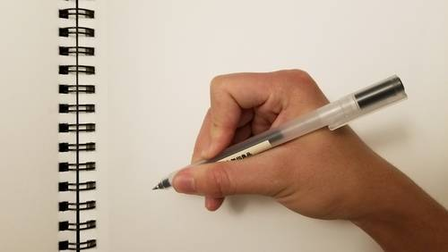
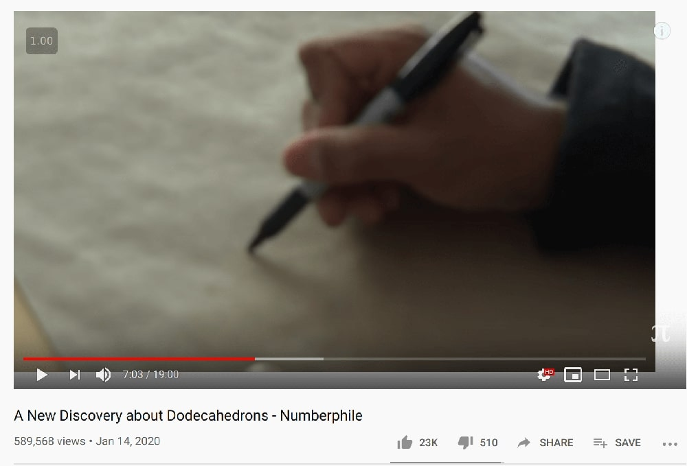
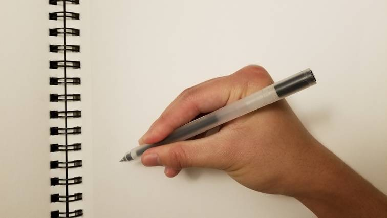
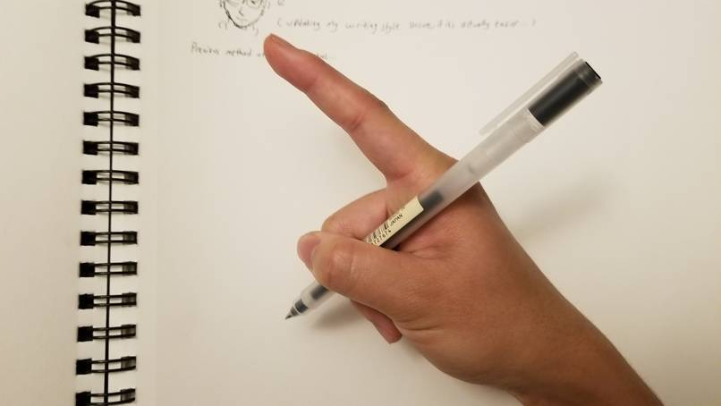
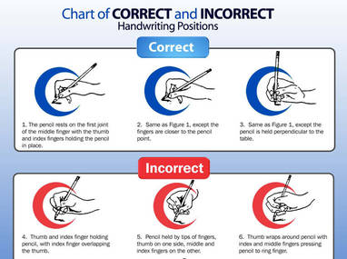
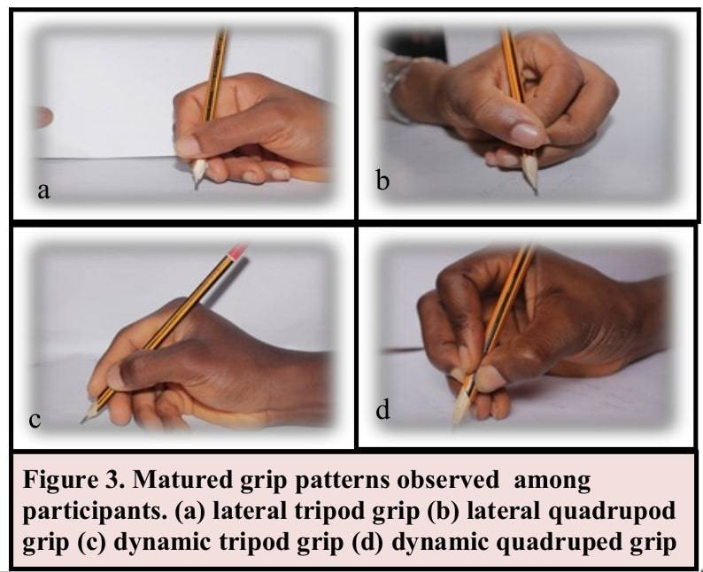

So I've been holding my pen roughly the same way for around 15 years now. It looks like this:

Notice the strange way my index finger is bent. There's an inward angle, almost looking like it's bending too far. I sorta recall people maybe commenting on it, but I didn't really much attention to it. It's just what felt right for me. This default grip is also, however, likely way too tight. Back in elementary school / high school (when I wrote more than typed), I'd get these shiny blister-like things on the sides of my fingers.
Growing up, I've seen my other friends write, and I think this type of grip is at least not uncommon. For example, see math professor Jayadev Athreya from a recent Numberphile video who writes with a similar grip:

After a recent bout of writing-intensive finals, however, I realized that this was not a grip conducive to writing for long periods of time. The pressure on my index finger was too much, and it started to hurt. So I thought a little bit about how to reduce the angle, and I came up with the following grip:

This has the benefit of not straining any of my fingers. After directing my attention to favoring this type grip over the course of a month, I actually now default to it, which is pretty nice.
As someone who previously spent a lot of time drawing, though, the lack of control afforded to me by the new grip is unfortunate, but it allows me to loosen up more when writing, which I think is a good thing. Here's a wacky in-between grip I tried, which is a lot like my original tight one, except that I ended up just...not using my index finger at all. Here, my thumb and my second finger are tightly gripping the pen, which gives me a lot of my original control back:

After all this, it occurred to me to see how holding a pen or pencil is typically depicted. I found this interesting chart which seems way too elitist to me about correct grip procedures. Bear in mind, though, that this is from a company which sells products encouraging "correct" pencil grip form, so I guess they have an agenda of some sort:
 (Note this isn't the whole image; the entire PDF chart of bad pencil forms is linked in the above paragraph.)
I was curious, now, though, about just how developed this field was, so I did a cursory check for studies on pencil grip. Apparently there have been quite a few studies of young children, what grips they use, and how this relates to their writing speed and other factors. As seen in this study and many others, researchers tend to see 4 variants of grips that people use to grip their pencils:

So it seems like I went from something similar to lateral tripod to something more like dynamic tripod. Huh. I guess the more interesting thing is that my wacky grip would be a...bipod, under their naming schema. It only used two fingers for support, rather than three or four.
And as for my original overly bent index finger? People notice! Papers like this one mention the extra flexing of the index finger, with quotes like:
A later, more detailed study (Ziviani, 1983) found that younger children between seven and 9-5 years, were more likely to have; (a)greater than 90 degrees of flexion of the proximal interphalangeal joint (that closest to the knuckle) of their index finger with possible hyperextension of their distal interphalangeal joint (that closest to the finger nail)
But they don't really speculate on what this might cause, instead saying:
Although these variations have been seen in the normal population of seven to 14 year olds, it has not been determined if they affect the speed or legibility of writing.
Of course, the literature on this is pretty substantial, although a cursory look at Google Scholar suggests that big chunk of it seems to have been done in the 80s-90s. (Which makes sense as typing was probably more emphasized the closer we got to the present.) So there could be more to look into about what the One True Grip looks like. But, for my own purposes, I'm satisfied with my new grip(s), and this was a deeper dive than I expected. I think my main anecdotal takeaway is that holding the pen lightly helps a lot, as does not hyperextending the distal interphalangeal joint (what a great phrase!)